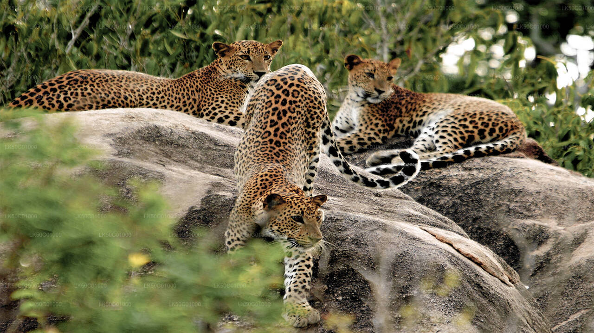
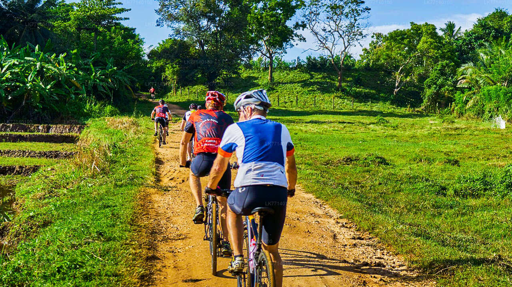
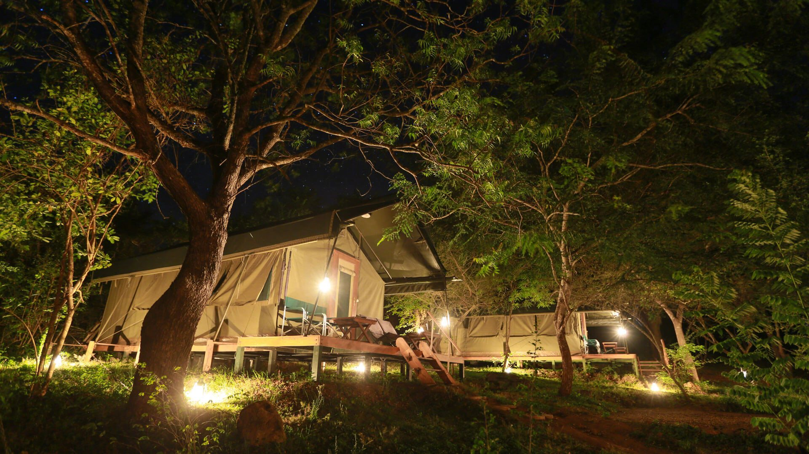

Yala National Park
Yala national park is one of the premiere wildlife sanctuaries in Sri Lanka, known for its high concentration of leopards and other species. Located in southeastern Sri Lanka, it covers about 979 square kilometers and consists of dry shrub land, savanna grasslands, lagoons and coastal forests along the Indian Ocean.
The park is divided into five blocks with Block 1 being the most visited where there are a lot of leopards. It offers visitors guided safari tours that enable them to see animals like elephants, sloth bears, deer, wild boars among others including a wide variety of bird life.
Apart from its rich flora and fauna diversity, Yala National Park also has old rock shelters and cave complexes which some contain prehistoric paintings and inscriptions that show their cultural importance to the area is immense.
Yala National Park is a must-visit site for nature enthusiasts as well as adventure lovers travelling to Sri Lanka because it has different geographical variations plus an abundance of wildlife coupled with its cultural heritage.

Yala Safari
Yala Cycling
Yala Camping
Yala Safari
The Yala National Park in Sri Lanka offers an unforgettable experience, particularly in its famous Block 1. Known for its abundant leopard population, this section of the park features open fields and minimal vegetation, providing excellent visibility for spotting these magnificent cats. In addition to leopards, visitors can also encounter elephants, sloth bears, deer, and crocodiles. Safari tours are conducted in open-air jeeps, providing unobstructed views of the wildlife. Accompanied by experienced guides, participants gain insights into animal behavior and the diverse ecosystems within the park. The ideal time to visit Yala is during the dry season from May to September. During this period, the reduced vegetation enhances wildlife viewing as animals congregate around the remaining water sources.
Overall, the Yala Safari is a thrilling and unforgettable experience, allowing visitors to immerse themselves in the rich biodiversity of Sri Lanka's natural wilderness while enjoying the adventure of a wildlife safari.

Yala Cycling
Yala cycling tour takes place in the buffer zone of Yala National Park, giving you a glimpse into the local way of life. Yala cycle tour covers flat soft terrain and is around 30–35 Km long. As you ride within the boundaries of Yala national park, you will explore chena farming and get a firsthand look at the shifting cultivation practices and rural lifestyle of Yala's farmers. Following the farmer's example, you will proceed on the bike tour through the reservoirs, canal, and witness the traditional irrigation methods and self-reliance of rural areas. During the trip, you will witness how paddy farmers cultivate their fields and participate in their work, immersing yourself in the traditional farming practices of the local community, enhancing the Yala cycle tour experience. You may come across wild animals like on safari, and if you're fortunate, you might even see wild elephants close to the elephant enclosure.
During the journey, you will have the opportunity to see how locals make dairy products and sample fresh curd with palm honey. As part of the Yala cycle tour, you will visit the Sithulpawa temple and admire the breathtaking views from the top of the Sithulpawa rock.
Exploring the Yala wilderness through a cycling tour is a great way to immerse yourself in Yala's culture and history.

Yala Camping
Designated camping areas can be found within the park, mainly situated in Block 5, which is the less frequented and more isolated section of Yala. These campgrounds offer essential amenities and have limited facilities available.
Those who want to camp in Yala National Park must get a specific permit from the park authorities. Camping is permitted only in specified areas, and visitors are required to adhere to strict rules in order to safeguard the park's wildlife and ecosystems.
Camping at Yala provides a chance to be fully immersed in nature, giving guests the opportunity to stay overnight while being enveloped by the park's varied wildlife. Campers can potentially observe nighttime wildlife and appreciate the peacefulness of the park, away from the busy crowds.
